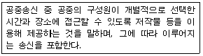
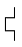

전자출판기능사 (2009-09-27 기출문제)
1과목: 출판론
1. 컴퓨터 전용 용지, 전표류, 장표류 등에 주로 인쇄하는 방식은?
- 식모 인쇄
- 비즈시스 폼 인쇄
- 플렉소 인쇄
- 패드 인쇄
(정답률: 74%)

2. 비닐로 책의 표지를 제작하는 방식으로 사전류, 성경책, 다이어리 등의 제작에 사용되며, 투명한 비닐 커버를 주머니처럼 만들어 표지를 끼우는 방식과 비닐 표지와 면지를 붙이는 방식이 가장 많이 사용되는 제택 방식은?
- 스프링 제책
- 고주파 제책
- 호부장 제책
- 트윈링 제책
(정답률: 75%)
3. 다음 중 서적의 요건에 해당되지 않는 사항은?
- 서적은 출판되어 대중이 이용할 수 이어야한다.
- 서적은 일정 분량 이상이어야 한다.
- 서적은 비정기적인 간행물을 말한다.
- 서적은 정기적인 간행물도 포함된다.
(정답률: 57%)
4. 출판기획을 단기, 중기, 장기기획의 3대 유형으로 분류할 때 단기기회의 특성으로 옳지 않은 것은?
- 신축성이 매우 크다.
- 1년 이하의 출판기획 수립을 의미한다.
- 성과 여부가 바로 나타난다.
- 기획입안자와 팀원 간의 집약적인 순발력이 요구된다.
(정답률: 66%)
5. 색의 대비 중 동시대비에 해당하지 않는 것은?
- 보색대비
- 채도대비
- 명도대비
- 계시대비
(정답률: 80%)
6. 다층평판을 구성하는 재료 중 화선부에 주로 사용되는 재료는?
- 크롬
- 알루미늄
- 스테인리스
- 구리
(정답률: 61%)
7. 먼셀표색계에서 주요 5색상에 해당되지 않는 것은?
- W(흰색)
- P(보라)
- G(녹색)
- B(파랑)
(정답률: 87%)
8. 출판기획의 요건 중 창의성과 독창성의 구현조건으로 가장 거리가 먼 것은?
- 출판물의 채산성을 어떻게 확보할 것인가?
- 출판물은 어떤 독자를 목표로 할 것인가?
- 출판물의 경쟁 대상이 있는가?
- 유사한 출판물이 있는가?
(정답률: 89%)
9. 가산혼합에 대한 설명으로 옳은 것은?
- 혼합할수록 채도가 낮아진다.
- 3원색을 똑같은 양으로 혼합하면 흑색이 된다.
- 혼합색이 원래의 색보다 명도가 낮아지도록 색을 혼합하는 방법이다.
- 가산혼합에서의 보색은 2색을 섞었을 때 청색(blue)이 된다.
(정답률: 67%)
10. 마젠타(Magenta)와 노랑(Yellow)의 원색을 감산혼합했을때 나타나는 색은?
- 흰색(White)
- 녹색(Green)
- 파랑(Blue)
- 빨강(Red)
(정답률: 79%)
11. 도서의 재판매가격유지제도의 특성을 설명한 것으로 옳지 않은 것은?
- 출판사의 이익을 예측할 수 있다.
- 소비자가 어느 지역에서나 같은 가격으로 도서를 구입할 수 있다.
- 도서의 가격에 안정을 꾀할 수 있다.
- 영세서점에 매우 불리한 제도이다.
(정답률: 88%)
12. 책을 표면 가공하는 목적에 해당되지 않는 것은?
- 원가절감 효과
- 습기 방지
- 잉크퇴색의 방지
- 인쇄면의 내마찰성 증대
(정답률: 90%)
13. 플렉소 인쇄방식에서 판에 잉크를 묻히는 장치에 해당하는 것은?
- 스퀴지(Squeegee)
- 아닐록스 롤러(Anilox roller)
- 텐션 롤러(Tension roller)
- 잉크 이김 롤러(Ink distributing roller)
(정답률: 60%)
14. 제책시 접장이나 낱장을 순서에 따라 모으는 작업을 무엇이라 하는가?
- 접지
- 조깅
- 장합
- 배킹
(정답률: 75%)
15. 먼셀표색계에서 순수한 빨강의 색표시법으로 옳은 것은?
- 5YR 6/12
- 5R 4/14
- 10R 6/10
- 10YR 7/10
(정답률: 77%)
16. 국제표준도서번호(ISBN)를 구성하는 요소가 아닌 것은?
- 국가번호
- 정가번호
- 발행자번호
- 서명식별번호
(정답률: 90%)
17. 지기인쇄에 활용되는 제판방식으로 가장 거리가 먼 것은?
- 볼록판 제판방식
- 오프셋 제판방식
- 그라비어 제판방식
- 스크린·패드 제판방식
(정답률: 61%)
18. 유통정보시스템 관련 용어 중 부가가치통신망을 나타내는 용어는?
- POS
- EDI
- VAN
- EOS
(정답률: 89%)
19. 평판의 판재로서 갖추어야 할 조건으로 가장 적합한 것은?
- 신축이 많고 경도가 높을 것
- 재생할 수 있는 횟수가 적을 것
- 적당한 탄력성과 경도를 가질 것
- 인쇄기 상에서 내마찰력이 없을 것
(정답률: 58%)
20. 그라비어 제판을 할 때 구리판을 부식시키는 주된 재료는?
- 질산
- 염산
- 염화제2철
- 질산은
(정답률: 52%)
2과목: 전자 출판
21. 화면편집 기능이 없거나 미약하고 대부분 명령어(Command) 방식으로 운용되는 편집전산화 초창기에 나타난 형태로서 신문조판 시스템이란 의미로도 통용된 것은?
- DTP
- CTS
- CAE
- HTM
(정답률: 66%)
22. 다음 중 하이퍼링크의 가장 복잡한 형태로서, 거미줄 또는 인간 두뇌의 신경 조직과 같은 모양으로 정보와 정보를 연결하는 것은?
- 격자형 링크
- 순차적 링크
- 계층적 링크
- 구조적 링크
(정답률: 80%)
23. 할러웨이(H.Hollowway)가 전자출판에 대해 정의한 내용으로 옳은 것은?
- 디지털 신호를 이용한 컴퓨터와 다른 전자기기를 이용하여 전통적인 최종 문서형태의 출판을 의미한다.
- 정보제공 매체의 전산화, 즉 정이가 아닌 전자매체를 이용해 출판하는 것만 뜻한다.
- 컴퓨터를 이용한 출판 행위를 말한다.
- 데이터베이스나 비디오텍스트와 같이 스크린 상에 내용을 불러낼 수 있도록 컴퓨터 검색이 가능한 형태로 출판하는 것을 뜻한다.
(정답률: 85%)
24. 컴퓨터 화면 한 페이지의 레이아웃을 완성하고 그 내용을 모니터로 확인하고 그대로 프린트를 통하여 볼 수 있는 기술은?
- WYSIWYG방식
- ICON방식
- OCR방식
- CTF방식
(정답률: 75%)
25. 다음 중 하이퍼링크에 대하여 가장 옳게 설명한 것은?
- 하이퍼링크에 의한 정보는 순차적이며, 하이퍼텍스트란 독자가 정보를 순차적으로 검색해보는 기능을 말한다.
- 하이퍼링크는 텍스트를 검색하는 기능만을 수행한다.
- 하이퍼링크는 독자와 정보 사이에 원활한 상호작용을 제공한다.
- 하이퍼텍스트라는 용어는 마샬 맥루한에 의해 1999년에 처음으로 사용되었다.
(정답률: 76%)
26. HTML에 대한 설명으로 옳지 않은 것은?
- 하이퍼텍스트 생성 언어로서, 웹브라우저 상에 정보를 표현하기 위한 것이다.
- 마크업은 태그(Tag)라고도 하며, 웹브라우저에서 오브젝트들을 어떻게 표현할 것인가를 정의해 주는 역할을 한다.
- HTML은 SGML에 기반을 둔 포맷이다.
- HTML 태그는 대소문자 구분이 있다.
(정답률: 54%)
27. 레이저프린트의 출력 방식 중 가장 매끈한 글자꼴을 출력할 수 있는 것은?
- 비트맵 방식
- CMYK방식
- 아웃라인 방식
- RGB방식
(정답률: 73%)
28. 링크의 구조 중 정보제공의 난이도가 높아지는 순서대로 나타낸 것은?
- 계층적링크→순차적링크→격자형링크→구조적링크
- 격자형링크→계층적링크→구조적링크→순차적링크
- 순차적링크→계층적링크→격자형링크→구조적링크
- 구조적링크→계층적링크→격자형링크→순차적링크
(정답률: 74%)
29. 컴퓨터의 중앙처리장치에 해당되지 않는 것은?
- 제어장치
- 연산장치
- 입력장치
- 주기억장치
(정답률: 62%)
30. 다음 중 인터넷의 특성이 아닌 것은?
- 정보의 공유가 활발하다.
- 정보의 갱신과 배포가 신속한다.
- 정보유통의 통제가 쉽다.
- 하이퍼링크 기능을 적극적으로 활용할 수 있다.
(정답률: 89%)
31. 전자통신출판을 위한 인터넷 정보표현 언어가 아닌 것은?
- HTML
- XML
- JAVA
(정답률: 70%)
32. 다음 중 입력장치에 해당되지 않는 것은?
- 광학판독기
- 음성인식장치
- 플로터
- 디지타이저
(정답률: 72%)
33. PDF에 대한 설명으로 옳지 않은 것은?
- 아크로뱃 리더라는 프로그램을 활용하여 페이지별로 넘기면서 보거나 부분적으로 확대, 축소하여 본다.
- PDF파일은 아크로뱃과 같은 소프트웨어를 이용해 문서 파일을 변환하여 만든다.
- PDF형식의 파일을 보거나 프린트하기 위해서는 아크로뱃 리더와 같은 소프트웨어가 있어야 한다.
- 종이 출판물과 동일(글꼴, 단, 자간, 행간)한 표현이 불가능하다.
(정답률: 86%)
34. 키보드나 마우스를 사용하여 메뉴나 아이콘을 선택하면 그것이 수행되는 직관적 사용자 인터페이스 방식을 무엇이라고 하는가?
- GUI
- CAD
- FTP
- ISSN
(정답률: 89%)
35. 편집된 문자난 이미지의 포스트스크립트 데이터를 필름이나 인화지에 출력하기 위해 픽셀 요소로 바꾸어 주는 변환기를 무엇이라고 하는가?
- OPI
- SCSI
- RIP
- OPP
(정답률: 77%)
36. 컴퓨터의 발전에 따라 변화하고 있는 출판 환경에 대한 전망이 잘못된 것은?
- 프리프레스 산업은 출판의 디지털화가 가속될수록 더욱 공정이 세분화된다.
- 한 가지 원고로 다양한 형태의 출판물을 제작할 수 있다.
- 다품종 소량 생산의 형태로 제작이 가능하다.
- 디지털 인쇄기의 등장으로 주문자 요구 출판이 가능해졌다.
(정답률: 72%)
37. 다음 설명과 가장 관련 있는 용어는?

- 복제
- 저작
- 전송
- 이용
(정답률: 91%)
38. 멀티미디어 요소 중 사운드 파일 포맷이 아닌 것은?
- PCM
- GIF
- WAV
- MIDI
(정답률: 89%)
39. 전자출판물의 특성으로 틀린 것은?
- 2차 가공의 용이성과 쌍방향 정보 교환 등을 할 수 있다.
- 소리와 동영상 및 애니메이션 등이 쉽게 제공된다.
- 정보를 독해할 수 있는 장치가 필요치 않아 휴대가 용이하다.
- 저장매체의 부분적인 손상으로 인하여 전체 내용을 확인할 수 없는 단점이 있다.
(정답률: 80%)
40. CD-ROM에 디지털 데이터를 저장하는 방식을 정해 놓은 규격과 관련 있는 것은?
- 그린 북(green book) 표준 포에
- 레드 북(red book) 표준 포에
- 엘로 북(yellow book) 표준 포에
- 블루 북(blue book) 표준 포에
(정답률: 52%)
3과목: 전산 편집
41. 다음 교정부호 지시어의 의미는?

- 옮기기
- 다음 줄로
- 순서 바꾸기
- 별행으로
(정답률: 59%)
42. 타이포그래피에서 불규칙하게 보이는 특정한 두 글자 사이의 공간들을 시각적으로 균일하게 보일 수 있도록 조정하는 것을 무엇이라고 하는가?
- 커닝
- 트래킹
- 파이카
- 유니트
(정답률: 60%)
43. 출판물에 대한 일반적인 설명으로 옳은 것은?
- 무크(Mook)는 반 년 단위로 간행되는 정기 간행물을 말한다.
- 교과서, 참고서, 지도 등은 정기간행물에 포함된다.
- 1년에 4번씩 정기적으로 간행하면 정기간행물에 포함된다.
- 회사의 규약집이나 보고서 등은 단행본으로 포함된다.
(정답률: 74%)
44. 양장 제책에서 면지의 주된 역할은?
- 책에 습기가 차는 것을 방지해 준다.
- 책장을 넘기기 쉽게 해 준다.
- 책등이 변형되지 않도록 해 준다.
- 표지와 본문을 연결시켜 준다.
(정답률: 70%)
45. 다음 중 그림을 데이터로 저장하는 방식이 아닌 것은?
- EPS
- TIFF
- PICT
- JAVA
(정답률: 77%)
46. 분리의 금칙사항 중 글꼬리에 떨어지는 것이 금지되는 것이 아닌 것은?
- ;
- ╔
- ┎
- (
(정답률: 82%)
47. 소형의 경장본으로 대중 보급을 목적으로 하여 저렴한 정가를 붙여 계속해서 내는 출판물을 무엇이라고 하는가?
- 사전
- 총서
- 문고본
- 전집
(정답률: 77%)
48. 다음 중 들여짜기에 대한 설명으로 가장 옳은 것은?
- 왼쪽 줄은 일정하게 맞추고 뒤쪽은 흘림으로 문단의 앞쪽을 정렬하는 것을 말한다.
- 글의 성격과 내용이 바뀌거나, 문단의 시작을 알린다.
- 오른쪽, 왼쪽 모두 흘려서 대칭이 되는 것을 말한다.
- 문단을 뒤쪽에 맞추어 앞쪽이 들어가게 쓰는 것을 말한다.
(정답률: 73%)
49. 인쇄물을 스캔한 이미지는 화면의 화소를 변환하는 과정에서 규칙적인 격자 모양의 선이 나타나 인쇄의 질을 떨어뜨리는 원인이 되는데 이미지 편집 프로그램에서 이러한 현상을 방지할 수 있는 필터는?
- 크로핑(cropping)
- 디스페클(despeckle)
- 캔버스(canvas)
- 샤픈(sharpen)
(정답률: 76%)
50. 다음 중 윌리엄 모리스(W. Morris)의 여백이론으로 옳은 것은? (단, 답란의 순서는 안쪽, 바깥쪽, 위쪽, 아래쪽 순이다.)
- 1 : 1.44 : 1.2 : 1.73
- 1.5 : 3 : 3 : 1.5
- 1.5 : 1.5 : 2 : 2
- 1 : 1.732 : 1.414 : 1.852
(정답률: 59%)
51. 다음 중 확대, 축소 비율이 대체로 자유롭고 가장 풍부한 색상 표현이 가능한 원색분해 원고는?
- 인쇄물 원고
- 사진 원고
- 슬라이드 필름 원고
- 그림 원고
(정답률: 56%)
52. 사진을 트리밍하는 이유가 아닌 것은?
- 사진의 불필요한 부분을 없애고자 할 때 하는 작업이다.
- 가로나 세로의 비율이 레이아웃을 하려고 자리 잡은 것과 맞지 않을 경우에 트리밍한다.
- 독자의 시선을 끌지 못할 때 트리망하면 시각적 효과를 나타낼 수 있다.
- 지정한 색도와 맞추기 위하여 트리밍한다.
(정답률: 75%)
53. 글꼴의 굵기를 순서대로 옳게 나타낸 것은?
- 세명조 < 중명조 < 태명조 < 견출명조
- 세명조 < 태명조 < 견출명조 < 중명조
- 세명조 < 태명조 < 중명조 < 견출명조
- 세명조 < 견출명조 < 중명조 < 태명조
(정답률: 60%)
54. 포스트스크립 언어에서 사용되는 그래픽 파일 형식으로 바이너리 또는 아스키 형식으로 저장되는 비트맵 이미지 파일은?
- EPS(Encapsulated Postscript)
- PNG(Portable Network Graphics)
- PDF(Portable Document Format)
- GIF(Graphics Interchange Format)
(정답률: 58%)
55. 일반적인 사진의 레이아웃 또는 트리밍 방법이 아닌 것은?
- 촬영자의 표현 의도를 정확히 파악한다.
- 3분법과 10분법을 활용한다.
- 주제 이외의 부분은 최대한 단순화시킨다.
- 시선의 흐름을 자주 바꾼다.
(정답률: 73%)
56. 책의 판형에 대하여 그 규격을 잘못 나타낸 것은?
- 국배판 : 257 × 364mm
- 국판 : 148 × 210mm
- 신국판 : 152× 225mm
- 국반판 : 1⑤ × 148mm
(정답률: 72%)
57. 문자의 크기에 대한 설명으로 옳지 않은 것은?
- 문자의 크기는 판형, 내용, 성격에 따라 변할 수 있다.
- 일반적으로 캡션, 도표의 내용, 박스기사 등은 본문보다 커야 한다.
- 리드나 발문은 본문보다 크게 하여 쉽게 눈에 띄도록 한다.
- 본문 문자 크기 중 10.5포인트 정도는 읽기가 쉽고 안정감을 주는 크기이다.
(정답률: 74%)
58. 다음 중 단행본 표지를 디자인할 경우 유의해야 할 사항으로 가장 거리가 먼 것은?
- 책등의 폭은 책 두께를 정확하게 예측해야 한다.
- 앞․뒷날개의 폭은 앞․뒷면 폭의 1/3 이하가 가장 적당하다.
- 앞면과 뒷면의 디자인은 5mm 정도 더 크게 해 절단시 꼭 맞거나 부족하지 않도록 한다.
- 책디자인, 책제목, 저자명, 출판사명 뿐 아니라 책 내용 중의 정수에 해당되는 구절이나 목차, 저자사진을 함께 싣는 것도 좋다.
(정답률: 73%)
59. 다음 변형체 중 문자의 세로 길이가 줄어들어 생긴 서체는?
- 장체
- 평체
- 좌사체
- 우사체
(정답률: 65%)
60. 잡지에 대한 설명으로 틀린 것은?
- 매월 발행되는 것을 월간지라 한다.
- 매주 발행되는 것을 주간지라 한다.
- 잡지는 정기적으로 발행되는 프린트 미디어이다.
- 매일의 사건을 전달하는 것을 순간지라 한다.
(정답률: 87%)